React
React概述React简介Hello Wrold使用脚手架开发环境搭建核心概念JSX语法组件和组件属性组件状态事件深入认识setState生命周期旧版生命周期新版生命周期传递元素内容表单React进阶属性默认值和属性类型检查HOCrefref转发contextPureComponent, 纯组件render propsProtals, 插槽错误边界React中的事件渲染原理首次渲染(新节点渲染)更新节点注意事项工具HOOKHOOK简介State HookEffect Hook自定义HookReducer HookContext HookCallback HookMemo HookRef HookImpreativeHandle HookLayoutEffect HookDebugValue HookReact动画CSSTransitionSwitchTransitionTransitionGroupRouter概述两种模式Hash Router(哈希路由)Browser History Router（浏览器历史记录路由）路由组件Router组件Route组件Switch组件路由信息historylocationmatch非路由组件获取路由信息其他组件LinkNavLinkRedirect常见应用路由嵌套受保护的页面（组件内守卫）vue路由模式的实现导航守卫切换动画滚动条问题阻止跳转Redux核心概念传统的服务端MVC前端MVC模式困难前端独立数据解决方案Redux管理数据actionreducerstoreRedux中间件Redux中间件redux-loggerredux-thunkredux-promise迭代器和迭代协议迭代生成器sagaredux-actions组件、路由、数据react-reduxredux和routerdvadva插件umijsantDesign
概述
React简介
什么是React?
React是有Facebook研发的，用于解决UI复杂度的开源Javascript库，目前由React联合社区维护。
它不是框架，只是为了解决UI复杂度而诞生的一个库
React的特点
- 轻量：React的开发版所有源码（包含注释）仅3000多行
- 原生：所有的React的代码都是用原生JS书写而成，不依赖其他库
- 易扩展：React对代码的封装程度较低，也没有过多的使用魔法，所有React中的很多功能可以扩展
- 不依赖宿主环境：React只依赖原生的JS语言，不依赖任何其他东西，包括运行环境。因此，它可以被轻松的移植到浏览器、桌面应用、移动端
- 渐进式：React并非框架，对整个工程没有强制约束力。这对与那些以存在的工程，可以逐步的将其改造为React，而不需要全盘重写
- 单向数据流：所有的数据自顶而下的流动
- 用JS代码声明界面
- 组件化
对比Vue
对比项 Vue React 全球使用量 √ 国内使用量 √ 性能 √ √ 易上手 √ 灵活度 √ 大型企业 √ 中/小型企业 √ 生态 √ 学习路径
整体原则：熟悉API --> 深入理解原理
React
- 基础：掌握React的基本使用方法，有能力制作各种组件，并理解其基本的运作原理
- 进阶：掌握React中的一些黑科技，提高代码质量
React-Router：相当于 vue-router
Redux：相当于vuex
- Redux本身
- 各种中间件
第三方脚手架：umi
UI库：Ant Design，相当于Vue的Element-UI 或 IView
源码分析
- React源码分析
- Redux源码分析
Hello Wrold
xxxxxxxxxx151 <!-- ... 其它 HTML ... -->23 <div id="root"></div>4 <!-- 加载 React。-->5 <!-- 注意: 部署时，将 "development.js" 替换为 "production.min.js"。-->6 <!-- script标签中加入crossorigin属性的主要目的是为了更详细的显示错误信息 -->7 <!-- React的核心库，与宿主环境无关 -->8 <script src="https://unpkg.com/react@16/umd/react.development.js" crossorigin></script>9 <!-- 依赖核心库，将核心的功能与页面结合 -->10 <script src="https://unpkg.com/react-dom@16/umd/react-dom.development.js" crossorigin></script>11 <!-- 编译JSX -->12 <script src="https://unpkg.com/babel-standalone@6/babel.min.js"></script>13 <script>14 ReactDOM.render('Hello world', document.getElemetById('root'));15 </script>React.createElement：React核心库中的方法创建一个React元素，称作虚拟DOM，本质上是一个对象
- 参数1：元素类型，如果是字符串，就是一个普通的html元素
- 参数2：元素的属性，一个对象
- 后续参数：元素的子节点
xxxxxxxxxx51var h1 = React.createElement("h1", {2title: "第一个React元素"3}, "hello world");45var span = React.createElement('span', {}, '这是一个span元素')JSX
JS的扩展语法，需要用babel进行转义
xxxxxxxxxx51<script type="text/babel">2var span = <span>一个span元素</span>3var h1 = <h1 title="第一个React元素">Hello World <span>一个span元素</span></h1>4ReactDOM.render(h1, document.getElemetById('root'));5</script>ReactDOM.render：React-dom库中的方法，负责将React元素渲染成真实的DOM元素
使用脚手架
脚手架类型
- 官方：create-react-app
- 第三方：next.js、umi.js
凡是使用JSX的文件，必须导入React
React项目支持
.js, .jsx文件
xxxxxxxxxx11yarn create react-app project-name开发环境搭建
vscode配置
emmet配置：文件 --> 首选项 --> 设置 --> emmet
xxxxxxxxxx11"javascript":"javascriptreact"vscode插件安装
- ESLint：代码风格检查
- ES7 React/Redux/GraphQL/React-Native snippets：快速代码编写
chrome插件安装
- React Developer Tools
核心概念
JSX语法
什么是JSX语法？
FaceBook起草的JS扩展语法
本质是一个JS对象，会被babel编译，最终会转换成createElement
每个JSX表达式，有且仅有一个根节点，若想创建一个不影响页面结构的额根节点，使用
React.Fragmentxxxxxxxxxx131const h1 = (2<>3<h1>Hello World <span>span元素</span></h1>4<p>p元素</p>5</>6);7// 等同于8const h1 = (9<React.Fragment>10<h1>Hello World <span>span元素</span></h1>11<p>p元素</p>12</React.Fragment>13);每个JSX元素必须结束（XML规范）
在JSX中嵌入表达式
- 在JSX使用注释
{/* 注释 */}
- 在JSX使用注释
将表达式作为内容的一部分
null、undefined、false不显示- 普通对象，不可以作为子元素
- 可以放置React元素对象
- 表达式中的值为数组时，会将数组的每一项进行遍历并渲染，需要添加key属性
将表达式作为元素属性
属性使用小驼峰命名法
防止注入攻击
- 自动编码
- dangerouslySetInnerHTML
元素的不可变性
- 虽然JSX元素是一个对象，但是该对象中的所有属性不可更改
- 如果确实需要更改元素的属性，需要重新创建JSX元素
xxxxxxxxxx791 2 // 将表达式作为内容的一部分3 const a = 111;4 const b = 2222;5 const obj1 = {6 a: 1,7 b: 28 };9 const obj2 = (<span>span元素</span>);10 11 const numbers = (new Array(30)).fill(0).map((item, i) => {12 return (<li key={i}>{i}</li>)13 })14 15 16 const div = (17 <div>18 { a } * { b } = { a*b }19 </div>20 <p>21 { /* 普通对象无法放置 */ }22 { obj1 } // 出错23 </p>24 <p>25 { obj2 } // 渲染26 </p>27 <ul>28 { numbers } 29 </ul>30 );31 32 // 等价于即内部会编译成33 React.createElement('div', {}, `${a} * ${b} = ${ a * b }`)3435// 将表达式作为元素属性36const url = '....';37const cls = 'image';3839cosnt div = (40 <div>41 <img alt="" src={ url } className={ cls } style={ {width:"100px",height:"200px" } } />42 </div>43);4445// 防止注入攻击46const content = '<h1>sdfdsfds</h1><p>dsfdsgfhgh</p>';47const div = (48 <div>49 {/* content中的标签元素会被自动编码 */}50 {content}51 </div>52);5354const div = (55 <div dangerouslySetHTML={{56 __html: content57 }}>58 </div>59);6061// 元素的不可变性62let num = 1;63const div = (64 <div title="标题">{ num }</div> 65);6667console.log(div.props.children); // 16869div.props.children = 2; // 报错70div.props.title = '测试'; // 报错7172ReactDOM.render(div, document.getElementById('root'));7374// 若是需要改变，则粗腰重新徐然75num = 2;76div = (77 <div title="标题">{ num }</div> 78);79ReactDOM.render(div, document.getElementById('root'));组件和组件属性
组件：包含内容、样式和功能的UI单元
创建组件
特别书注意：组件的名称首字母必须大写
函数组件
xxxxxxxxxx131function MyFuncComp() {2return (<h1>组件内容</h1>)3}45// 使用组件6ReactDOM.render((7<div>8{ /* 方式1：使用函数调用的方式使用，不推荐，因为呈现不出组件结构 */ }9{ MyFuncComp() }10{ /* 方式2，推荐使用 */ }11<MyFuncComp />12</div>13) ,document.getElementById('root'));类组件
- 必须继承
React.Component - 必须提供
render函数，用于渲染组件
xxxxxxxxxx191// MyClassComp.js2import React from 'react';34export default class MyClassComp extends React.Component {56// 该方法必须返回React元素7render() {8return (<h1>类组件内容</H1>)9}10}1112// index.js13import MyClassComp from './MyClassComp.js'1415ReactDOM.render((16<div>17<MyClassComp />18</div>19), document.getElementById('root'));- 必须继承
组件的属性
注意：组件的属性应该使用小驼峰命名法
- 对于函数组件，属性会作为一个对象的属性，传递给函数的参数
- 对于类组件，属性会作为一个对象的属性，传递给构造函数的参数
组件无法改变自身的属性
React中的哲学：数据属于谁，谁才有改动的权利（单向数据流）
React中的数据，是自顶向下流动
组件状态
组件状态：组件可以自行维护的数据
组件状态仅在类组件中有效
状态(state)，本质上，是类组件的一个属性，是一个对象
状态初始化
在构造函数中初始化
xxxxxxxxxx161constructor(props) {2super(props);3// 初始化状态4this.state = {5left: this.props.number6};7this.timer = setInterval(() => {8// 会将状态进行混合9this.setState({10left: this.state.left - 111});// 重新设置状态，触发自动重新渲染12if (this.state.left === 0) {13clearInterval(this.timer);14}15}, 1000);16}使用类属性进行初始化
xxxxxxxxxx71export default class Tick extends React.Component {2// 初始化状态，JS Next 语法，目前处于试验阶段3// 该属性创建会在构造函数结束之后4state={5left: this.props.number6}7}
React中不能直接改变状态：因为React无法监控到状态发生了变化
状态的变化，必须使用
this.setState({})来改变一旦调用
this.setState，组件就会重新渲染猜想：
this.setState方法，改变状态是同步进行的，重新渲染组件是异步进行的组件中的数据
- props：该数据是由组件的使用者传递的数据，所有权不属于组件本身，因此组件无法改变该数据
- state：该数据是由组件自身创建的，所有权属于组件自身，因此组件有权改变该数据
事件
在React中，组件的事件，本质上就是一个属性
按照之前Ract组件的约定，由于事件的本质是一个属性，因此也需要使用小驼峰命名法
如果没有特殊处理，在事件处理函数中，this指向undefined
- 使用bind函数，绑定this
- 使用箭头函数
xxxxxxxxxx351function handleClick(e) {2 console.log('click');3 console.log(e);4}56// 内置html组件的事件与原生dom一一对应，只是命名方式变为了小驼峰命名法7// 在React中事件的本质就是一个属性并赋值为函数，然后在合适的时候，调用该函数，实现回调8 // 只是在React内置组件中做了相应的回调处理，而自定义组件中需要自己定义回调的时机9cosnt btn = (10 <button onClick={this.handleClick}></button>11 <button onClick={ (e) => { console.log(e); } }></button>12);131415// 处理事件中的this问题1617// 1. bind函数18constructor(props) {19 // 将原型上的事件处理函数绑定好this赋值到对象上20 super(props);21 this.handleClick = this.handleClick.bind(this);22 this.handleOver = this.handleOver.bind(this);23}2425cosnt btn = (26 // 这种处理方式，效率较低，因为每次重新渲染都要生成一个新的函数27 <button onClick={this.handleClick.bind(this)}></button>28);2930// 2、箭头函数31handleClick = () => {32 // 根据es6语法，handleClick会成为对象的一个属性，而箭头函数的指向为外层非箭头函数的this指向33 console.log(this);34}35深入认识setState
setState，它对状态的改变，可能是异步的
- 如果改变状态的代码处于某个HTML元素的事件中，则其实异步的
- 否则，是同步的，即执行完setState之后立即同步状态并执行render函数，然后再执行setState后面的代码
如果遇到某个事件中，需要同步调用setState多次，需要使用函数的方式得到最新状态
最佳实践
把所有的setState当做异步处理
永远不要信任setState调用之后的状态
如果要使用改变之后的状态，需要使用回调函数( setState的第二个参数 )
如果新的状态要根据之前的状态进行运算，使用函数的方式改变状态 ( setState的第一个参数 )
个人理解：该种方式与第一个参数为对象形式的调用方式相比
- 前者，每次函数状态改变函数均会对state进行改变，待所有状态改变完成后，触发render
- 后者，将多次状态改变完成后，再统一对stete进行改变，然后触发render
React会对异步的setState进行优化：将多次setState进行合并（将多次状态改变完成后，再统一对stete进行改变，然后触发render）
xxxxxxxxxx731import React, { Component } from 'react'23export default class Comp extends Component {45 state = {6 n: 07 }89 // 情景110 handleClick = () => {11 this.setState({12 n: this.state.n + 113 }, () => {14 //状态完成改变之后触发，该回调运行在render之后15 console.log(this.state.n);16 });17 }18 19 // 情景220 handleClick = () => {21 this.setState(cur => {22 //参数cur表示当前的状态23 //该函数的返回结果，会混合（覆盖）掉之前的状态24 //该函数是异步执行25 return {26 n: cur.n + 127 }28 }, ()=>{29 //所有状态全部更新完成，并且重新渲染后执行30 console.log("state更新完成", this.state.n);31 });3233 this.setState(cur => ({34 n: cur.n + 135 }));3637 this.setState(cur => ({38 n: cur.n + 139 }));40 }41 42 // 情景343 // constructor(props) {44 // super(props);45 // setInterval(() => {46 // 此处，非事件处理函数中，setState同步执行47 // this.setState({48 // n: this.state.n + 149 // });5051 // this.setState({52 // n: this.state.n + 153 // });54 // this.setState({55 // n: this.state.n + 156 // });57 // }, 1000)58 // }5960 render() {61 console.log("render");62 return (63 <div>64 <h1>65 {this.state.n}66 </h1>67 <p>68 <button onClick={this.handleClick}>+</button>69 </p>70 </div>71 )72 }73}生命周期
生命周期：组件从诞生到销毁会经历一系列的过程，该过程就叫做生命周期。React在组件的生命周期中提供了一系列的钩子函数（类似于事件），可以让开发者在函数中注入代码，这些代码会在适当的时候运行
生命周期仅存在于类组件中，函数组件每次调用都是重新运行函数，旧的组件即刻销毁
旧版生命周期
指的是：React版本 < 16.0.0
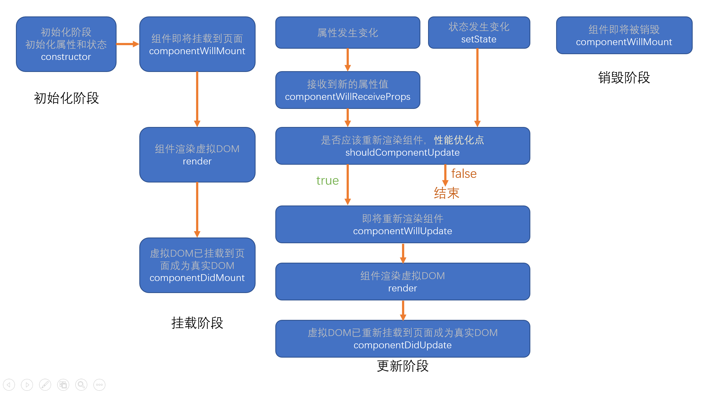
constructor
- 同一个组件对象只会创建一次
- 不能在第一次挂载到页面之前，调用setState，为了避免问题，构造函数中严禁使用setState
componentWillMount（16版本以上已移除）
- 和构造函数一样，它只会运行一次
- 可以使用setState，但是为了避免bug，不允许使用，因为在某些特殊情况下，该函数可能会调用多次
render
- 返回一个虚拟DOM，会被挂载到虚拟DOM树中，最终渲染到页面的真实DOM中
- render可能不止运行一次，只要需要重新渲染，就会运行
- 严禁使用setState，因为可能会导致无限递归渲染
componentDidMount
- 只会执行一次
- 可以使用setState
- 通常情况下，会将网络请求、启动计时器等一开始需要的操作，书写到该函数中
componentWillReceiveProps（16版本以上已移除）
- 即将接收新的属性值，指属性被重新赋值
- 参数为新的属性对象
- 该函数可能会产生一些bug，不推荐使用
shouldComponnetUpdate
- 指示React是否要重新渲染该组件，通过返回true和false来指定
- 默认情况下，返回true
componentWillUpdate（16版本以上已移除）
- 组件即将被重新渲染
componentDidUpdate
- 往在该函数中使用dom操作，改变元素
componentWillUnmount
- 通常在该函数中销毁一些组件依赖的资源，比如计时器
新版生命周期
指的是：React版本 >= 16.0.0
React官方认为，某个数据的来源必须是单一的
React16废弃的三个生命周期函数
- componentWillMount
- componentWillReceiveProps
- componentWillUpdate
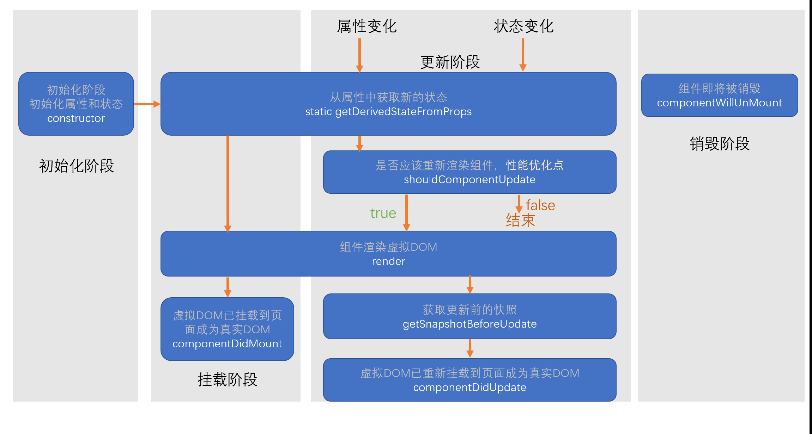
getDerivedStateFromProps
- 通过参数可以获取新的属性和状态
- 该函数是静态的
- 该函数的返回值会覆盖掉组件状态
- 该函数几乎没有什么作用
getSnapshotBeforeUpdate
- 真实的DOM构建完成，但是还未实际渲染到页面中
- 在该函数中，通常用于实现一些附加的DOM操作
- 该函数的返回值，会作为componentDidUpdate的第三个参数
传递元素内容
内置组件：div、p、h1等
xxxxxxxxxx31<div>2元素内容3</div>自定义组件
如果给自定义组件传递元素内容，则React会将元素内容作为children属性传递过去
xxxxxxxxxx281// index.js2import React from 'react';3import ReactDOM from 'react-dom';4import Comp from "./Comp"56ReactDOM.render((7<Comp content1={<h2>第2组元素内容</h2>} content2={<h2>第3组元素内容</h2>}>89<h2>第1组元素内容</h2>1011</Comp>12), document.getElementById('root'));1314// Comp.js15import React from 'react'1617export default function Comp(props) {18console.log(props);19return (20<div className="comp">21<h1>组件自身的内容</h1>22{/* {props.children || <h1>默认值</h1>} */}23{props.children}24{props.content1}25{props.content2}26</div>27)28}
表单
受控组件和非受控组件
- 受控组件：组件的使用者，有能力完全控制该组件的行为和内容。通常情况下，受控组件往往没有自身的状态，其内容完全受到属性的控制
- 非受控组件：组件的使用者，没有能力控制该组件的行为和内容，组件的行为和内容完全自行控制
表单组件，默认情况下是非受控组件，一旦设置了表单组件的value属性，则其变为受控组件(单选和多选框需要设置checked属性)
React进阶
属性默认值和属性类型检查
属性默认值
通过一个静态属性
defaultProps告知React属性默认值xxxxxxxxxx491// 函数组件2import React from 'react'34export default function FuncDefault(props) {5console.log(props);//已经完成了混合6return (7<div>8a:{props.a}，b:{props.b}，c:{props.c}9</div>10)11}12//属性默认值13FuncDefault.defaultProps = {14a: 1,15b: 2,16c: 317}1819// 类组件2021import React from 'react'2223export default class ClassDefault extends React.Component {2425static defaultProps = {26a: 1,27b: 2,28c: 329}3031constructor(props) {32super(props);33console.log(props);34}3536render() {37return (38<div>39a:{this.props.a}，b:{this.props.b}，c:{this.props.c}40</div>41)42}43}44// //属性默认值45// ClassDefault.defaultProps = {46// a: 1,47// b: 2,48// c: 349// }属性类型检查
使用库
prop-types对组件使用静态属性
propTypes告知React如何检查属性xxxxxxxxxx241PropTypes.any：//任意类型2PropTypes.array：//数组类型3PropTypes.bool：//布尔类型4PropTypes.func：//函数类型5PropTypes.number：//数字类型6PropTypes.object：//对象类型7PropTypes.string：//字符串类型8PropTypes.symbol：//符号类型910PropTypes.node：//任何可以被渲染的内容，字符串、数字、React元素11PropTypes.element：//react元素12PropTypes.elementType：//react元素类型13PropTypes.instanceOf(构造函数)：//必须是指定构造函数的实例14PropTypes.oneOf([xxx, xxx])：//枚举15PropTypes.oneOfType([xxx, xxx]); //属性类型必须是数组中的其中一个16PropTypes.arrayOf(PropTypes.XXX)：//必须是某一类型组成的数组17PropTypes.objectOf(PropTypes.XXX)：//对象由某一类型的值组成18PropTypes.shape(对象): //属性必须是对象，并且满足指定的对象要求19PropTypes.exact({})：//对象必须精确匹配传递的数据2021//自定义属性检查，如果有错误，返回错误对象即可22属性: function(props, propName, componentName) {23//...24}xxxxxxxxxx781import React, { Component } from 'react'2import PropTypes from "prop-types";34export class A {56}78export class B extends A {910}1112export default class ValidationComp extends Component {13//先混合属性14static defaultProps = {15b: false16}1718//再调用相应的函数进行验证19static propTypes = {20a: PropTypes.number.isRequired, //a属性必须是一个数字类型,并且必填21b: PropTypes.bool.isRequired, //b必须是一个bool属性,并且必填22onClick: PropTypes.func, //onClick必须是一个函数23c: PropTypes.any, //1. 可以设置必填 2. 阵型保持整齐（所有属性都在该对象中）24d: PropTypes.node.isRequired, //d必填，而且必须是一个可以渲染的内容，字符串、数字、React元素25e: PropTypes.element, //e必须是一个React元素26F: PropTypes.elementType, //F必须是一个组件类型27g: PropTypes.instanceOf(A), //g必须是A的实例28sex: PropTypes.oneOf(["男", "女"]), //属性必须是数组当中的一个29h: PropTypes.arrayOf(PropTypes.number), //数组的每一项必须满足类型要求30i: PropTypes.objectOf(PropTypes.number), //每一个属性必须满足类型要求31j: PropTypes.shape({ //属性必须满足该对象的要求32name: PropTypes.string.isRequired, //name必须是一个字符串，必填33age: PropTypes.number, //age必须是一个数字34address: PropTypes.shape({35province: PropTypes.string,36city: PropTypes.string37})38}),39k: PropTypes.arrayOf(PropTypes.shape({40name: PropTypes.string.isRequired,41age: PropTypes.number.isRequired42})),43m: PropTypes.oneOfType([PropTypes.string, PropTypes.number]),44score: function (props, propName, componentName) {45console.log(props, propName, componentName);46const val = props[propName];47//必填48if (val === undefined || val === null) {49return new Error(`invalid prop ${propName} in ${componentName}，${propName} is Required`);50}51//该属性必须是一个数字52if (typeof val !== "number") {53return new Error(`invalid prop ${propName} in ${componentName}，${propName} is not a number`);54}55const err = PropTypes.number.isRequired(props, propName, componentName);56if(err){57return err;58}59//并且取值范围是0~10060if (val < 0 || val > 100) {61return new Error(`invalid prop ${propName} in ${componentName}，${propName} must is between 0 and 100`);62}63}64}6566render() {67const F = this.props.F;68return (69<div>70{this.props.a}71<div>72{this.props.d}73<F />74</div>75</div>76)77}78}
HOC
HOF：Higher-Order Function, 高阶函数，以函数作为参数，并返回一个函数
HOC: Higher-Order Component, 高阶组件，以组件作为参数，并返回一个组件
通常，可以利用HOC实现横切关注点
举例：
- 20个组件，每个组件在创建组件和销毁组件时，需要作日志记录
- 20个组件，它们需要显示一些内容，得到的数据结构完全一致
注意：
- 不要在render中使用高阶组件
- 不要在高阶组件内部更改传入的组件
个人补充
HOC组件的命名方式，一般为
with + 要分离的功能，如withLog、withLogin等一般将传入的组件，不做任何改动的在render中显示
HOC组件中，导出的是一个函数组件，该组件运行后返回的组件可以是函数组件/类组件，如下
xxxxxxxxxx441// withLog.js2import React from "react";34export default function withLog(Comp, str) {5return class LoginWrapper extends React.Component {6componentWillMount() {7console.log(`日志：组件${Comp.name}被创建了！${Date.now()}`);8}9componentWillUnmount() {10console.log(`日志：组件${Comp.name}被销毁了！${Date.now()}`);11}12render() {13return (14<>15<h1>{str}</>16<Comp {this.props} />17</>18);19}20};21}2223// withLogin.js24import React from "react";25import PropTypes from "prop-types";2627export default function withLogin(Comp, title) {28LoginWrapper.propTypes = {29isLogin: PropTypes.bool.isRequired30};3132function LoginWrapper(props) {33if (props.isLogin) {34return (35<>36<h1>{title}</h1>37<Comp {props} />38</>39);40}41return null;42}43return LoginWrapper;44}
ref
reference引用
使用场景：希望直接使用DOM元素中的某个方法，后者希望直接使用自定义组件中的某个方法
- ref作用于内置的html组件，得到的将是真实的dom对象
- ref用于类组件，得到的将是类的实例
- ref不能用于函数组件（ref写的位置，不能是函数组件，函数组件内部可以使用）：React认为获得函数组件的引用没有意义
ref不再推荐使用字符串赋值，字符串赋值的方式将来可能会被移除；
目前，ref推荐使用功能对象或者函数
对象
- 通过
React.createRef函数创建
函数
函数的调用时间
componentDidMount时候会调用该函数在
componnetDidMount事件中可以使用ref如果ref的值发生了变动（旧函数被新函数替代），分别调用旧的函数和新的函数，时间点出现在
componentDidUpdate之前- 旧的函数被调用时，传递null
- 新的函数被调用时，传递对象
xxxxxxxxxx71<input type="text" ref={el => {2console.log('调用函数', el);3this.txt = el;4}} />5<button onClick={() => {6this.setState({});7}}>测试</button>如果ref所在的组件被卸载，会调用函数
- 通过
谨慎使用ref
能够使用属性和状态进行控制，就不要使用ref
- 调用真实DOM对象中的方法
- 某个时候需要调用类组件中的方法
xxxxxxxxxx701// 对象形式使用ref2import React, { Component } from "react";34class A extends Component {5 method() {6 console.log("调用了组件A的方法");7 }8 render() {9 return <h1>组件A</h1>;10 }11}1213export default class Comp extends Component {14 constructor(props) {15 super(props);16 this.txt = React.createRef();17 this.compA = React.createRef();18 }1920 handleClick = () => {21 console.log(this.compA.current);22 this.txt.current.focus();23 this.compA.current.method();24 };2526 render() {27 return (28 <div>29 <input ref={this.txt} id="inp" type="text" />30 <A ref={this.compA} />31 <button onClick={this.handleClick}>获取焦点</button>32 </div>33 );34 }35}36// 函数形式使用ref37import React, { Component } from "react";3839export default class Comp extends Component {40 state = {41 show: true42 };4344 getRef = el => {45 console.log("函数被调用了", el);46 this.txt = el;47 };4849 handleClick = () => {50 this.setState({51 show: !this.state.show52 });53 };5455 componentDidMount() {56 console.log("didMount", this.txt);57 }5859 render() {60 return (61 <div>62 {63 this.state.show && <input ref={this.getRef} type="text" />64 }65 <button onClick={this.handleClick}>获取焦点</button>66 </div>67 );68 }69}70ref转发
使用
fowardRef方法- 参数，传递的是函数组件，不能是类组件，并且，函数组件需要有第二个参数来得到ref
- 返回值，返回一个新的组件
ref转发的使用场景：当需要引用函数组件的内部元素，而非组件本身时
xxxxxxxxxx291import React, { Component } from "react";23function A(props, ref) {4 return (5 <>6 <h1 ref={ref}>A</h1>7 <p>{props.words}</p>8 </>9 );10}1112const NewA = React.forwardRef(A);1314export default class Comp extends Component {15 ARef = React.createRef();1617 componentDidMount() {18 console.log("componentDidMount", this.ARef);19 }2021 render() {22 return (23 <div>24 {/* <A ref={this.ARef} /> */}25 <NewA ref={this.ARef} words="sfdsdfsadf" />26 </div>27 );28 }29}xxxxxxxxxx341// 转发类组件（将类组件用函数组件进行包装后进行转发）2import React, { Component } from "react";34class A extends Component {5 render() {6 return (7 <h1 ref={this.props.forwardRef}>8 组件A9 <span>{this.props.words}</span>10 </h1>11 );12 }13}1415const NewA = React.forwardRef((props, ref) => {16 return <A {props} forwardRef={ref} />17});1819export default class Comp extends Component {20 ARef = React.createRef();2122 componentDidMount() {23 console.log("componentDidMount", this.ARef);24 }2526 render() {27 return (28 <div>29 {/* <A ref={this.ARef} /> */}30 <NewA ref={this.ARef} words="sfdsdfsadf" />31 </div>32 );33 }34}context
上下文：context，表示做某一些事情的环境
React中的上下文特点
- 当某个组件创建了上下文后，上下文中的数据，会被所有的后代组件共享
- 如果某个组件依赖了上下文，会导致该组件不在纯粹（纯粹指的是：外部数据仅来源于属性props）
- 一般情况下，用于第三方组件（通用组件）
旧版本API
创建上下文
只有类组件才可以创建上下文
- 给类组件书写静态属性
childContextTypes，使用该属性对上下文中的数据类型进行约束 - 添加实例方法
getChildContext，该方法返回的对象，即为上下文数据，该数据必须满足类型约束，该方法会在每次render之后运行
使用上下文中的数据
要求：如果要使用上下文中的数据，组件必须有一个静态属性
contextTypes，该属性描述了需要获取的上下文中的数据类型- 可以在组件的构造函数中，通过第二个参数，获取上下文数据
- 从组件的
context属性中获取 - 在函数组件中，通过第二个参数，获取上下文数据
上下文数据变化
- 上下文中的数据不可以直接变化，最终都是通过状态改变
- 在上下文中加入一个处理函数，可以用于后代组件更改上下文数据
xxxxxxxxxx741import React, { Component } from "react";2import PropTypes from "prop-types";34const types = {5a: PropTypes.number,6b: PropTypes.string.isRequired,7onChangeA: PropTypes.func8};910function ChildA(props, context) {11return (12<div>13<h1>ChildA</h1>14<h2>15a:{context.a}，b:{context.b}16</h2>17<ChildB />18</div>19);20}2122ChildA.contextTypes = types;2324class ChildB extends Component {25static contextTypes = types;2627constructor(props,context) {28super(props, context);29}3031render() {32return (33<p>34ChildB，来自于上下文的数据：a: {this.context.a}, b:{this.context.b}35<button36onClick={() => {37this.context.onChangeA(this.context.a + 2);38}}39>40子组件的按钮，a+241</button>42</p>43);44}45}4647export default class Comp extends Component {48static childContextTypes = types;4950state = {51a: 123,52b: "abc"53};5455getChildContext() {56return {57a: this.state.a,58b: this.state.b,59onChangeA: newA => {60this.setState({61a: newA62});63}64};65}6667render() {68return (69<div>70<ChildA />71</div>72);73}74}- 给类组件书写静态属性
新版本API
旧版本API存在严重的效率问题，并且容易导致滥用
创建上下文
上下文是一个独立于组件的对象，该对象通过
React.createContext(默认值)创建，返回的是一个包含两个属性的对象Provider属性：生产者。一个组件，该组件会创建一个上下文，该组件有一个value属性，通过该属性，可以为其数据赋值
同一个Provider，不要用到多个组件中，如果需要在其他组件中使用该数据，应该考虑将数据提升到更高的层次
Consumer属性
使用上下文中的数据
类组件中获取上下文
在类组件中，直接使用
this.context获取上下文数据要求：必须拥有静态属性
contextTypes，应赋值为创建的上下文对象在类组件中，也可以使用
consumer来获取上下文数据
在函数组件中，需要使用
consumer来获取上下文数据- Consumer是一个组件
- 它的子节点，是一个函数（它的props.children需要传递一个函数）
注意细节
如果，上下文提供者（Context.Provoder）中的value属性发生变化（Object.i比较），会导致该上下文提供的所有后代元素全部重新渲染，无论该子元素是否优化（无论
shouldComponentUpdate函数返回什么结果）上下文的应用场景：编写一套组件（有多个组件），这些组件之间需要相互配合才能最终完成功能
xxxxxxxxxx801import React, { Component } from "react";23const ctx = React.createContext();45function ChildA(props) {6return (7<div>8<h1>ChildA</h1>9<h2>10<ctx.Consumer>11{value => (12<>13{value.a}, {value.b}14</>15)}16</ctx.Consumer>17</h2>18<ChildB />19</div>20);21}2223class ChildB extends Component {24render() {25return (26<ctx.Consumer>27{value => (28<p>29ChildB，来自于上下文的数据：a: {value.a}, b:{value.b}30<button31onClick={() => {32value.changeA(value.a + 2);33}}34>35后代组件的按钮，点击a+236</button>37</p>38)}39</ctx.Consumer>40);41}42}4344// class ChildB extends Component {45// static contextType = ctx;4647// render() {48// return (49// <>50// a: {this.context.a},51// b: {this.context.b}52// <button onClick={() => {53// this.context.changeA(this.context.a + 1);54// }}>加1</button>55// </>56// );57// }58// }5960export default class NewContext extends Component {61state = {62a: 0,63b: "abc",64changeA: newA => {65this.setState({66a: newA67});68}69};7071render() {72return (73<ctx.Provider value={this.state}>74<div>75<ChildA />76</div>77</ctx.Provider>78);79}80}
PureComponent, 纯组件
纯组件：用于避免不必要的渲染（运行render函数），从而提高效率
优化：如果一个组件的属性和状态，都没有发生变化，重新渲染该组件是没有必要的
PureComponent是一个组件，如果某个组件继承自该组件，则该组件的shouldComponentUpdate会进行优化，即对属性和状态进行浅比较
注意
PureComponent进行浅比较- 为了效率，应该尽量使用
PureComponent - 要求不要改动之前的状态，永远是创建新的状态覆盖之前的状态（Immutable，不可变对象）
- 有一个第三方库，Immutable.js，它专门用于制作不可变对象
- 为了效率，应该尽量使用
函数组件，使用
React.memo函数制作纯组件，其原理是使用HOC原理，返回一个类组件，类组件包含该函数组件xxxxxxxxxx101function memo(FuncComp) {2return class Memo extends PureComponent {3render() {4return (5<>6<FuncComp {this.props} />7</>8);9}10}
render props
有时候，某些组件的各种功能及其处理的逻辑几乎完全相同，只是显示的界面不一样，建议下面的方式任选其一来解决重复代码问题（横切关注点）
render props
- 某个组件，需要某个属性
- 该属性是一个函数，函数的返回值用于渲染
- 函数的参数会传递为需要的数据
- 注意纯组件的属性（尽量避免每次传递的render props的地址不一致）
- 通常该属性的名字叫做render
HOC
Protals, 插槽
插槽：将一个React元素渲染到指定的DOM容器中
ReactDOM.createProtal(React元素, 真实的DOM)
注意
- React中的事件是包装过的
- 它的事件冒泡，是根据虚拟DOM树来冒泡的，与真实的DOM无关
xxxxxxxxxx281import React from 'react'2import ReactDOM from "react-dom"34function ChildA() {5 return ReactDOM.createPortal(<div className="child-a" style={{6 marginTop: 2007 }}>8 <h1>ChildA</h1>9 <ChildB />10 </div>, document.querySelector(".modal"));11}1213function ChildB() {14 return <div className="child-b">15 <h1>ChildB</h1>16 </div>17}1819export default function App() {20 return (21 <div className="app" onClick={e => {22 console.log("App被点击了", e.target)23 }}>24 <h1>App</h1>25 <ChildA />26 </div>27 )28}错误边界
默认情况下，若一个组件在渲染期间（render）发生错误，会导致整个组件树全部被卸载
默认情况下的错误处理机制，组件发生错误之后，若无法处理错误，则按照层级，往父元素抛出错误，若父元素无法处理，则继续向上抛出，直到根组件，若根组件英文无法处理错误，则整个组件树全部被卸载
错误边界：是一个组件，该组件会捕获到渲染期间（render）子组件发生的错误，并有能力阻止错误继续传播
让某个组件捕获错误的方式
编写生命周期函数
getDerivedStateFromError- 静态函数
- 运行时间点：渲染子组件的过程中，发生错误之后，更新页面之前
- 注意：只有子组件发生错误，才会运行该函数
- 该函数返回一个对象，React会将该对象的属性覆盖掉当前组件的state
- 函数存在一个参数：错误对象
- 通常，该函数用于改变状态
编写生命周期函数
componentDidCatch- 实例方法
- 运行时间点：渲染子组件的过程中，发生错误，更新页面之后，由于其运行时间点比较靠后，因此不太会在该函数中改变状态（在其中改变状态比较浪费效率）
- 该函数有两个参数：错误对象和错误信息
- 通常，该函数用于记录错误消息（即发送到后台进行记录或者在控制台打印）
细节
某些错误，错误边界组件无法捕获
- 自身的错误
- 异步的错误
- 事件中的错误
总结：仅处理渲染子组件期间的同步错误
React中的事件
这里的事件指的是：React内置的DOM组件中的事件
给
document注册事件几乎所有的元素的事件处理，均在document的事件中处理
- 一些不冒泡的事件，是直接在元素上监听的
- 一些
docuemnt上面没有的事件，直接在元素上监听
在
document的事件处理，React会根据虚拟DOM树完成事件函数的调用React的事件参数，并非真实的DOM事件参数，是React合成的一个对象，该对象类似于真实DOM的事件参数
stopPropagation，阻止事件在虚拟DOM中冒泡nativeEvent，可以得到真实的DOM事件对象- 为了提高执行效率，React使用事件对象池来处理事件对象
注意
- 如果给真实的DOM注册事件，阻止了事件冒泡，则会导致React的相应事件无法触发
- 如果给真实的DOM注册事件，事件会先于React事件运行
- 通过React的事件中阻止事件冒泡，无法阻止真实的DOM事件冒泡
- 可以通过
nativeEvent.stopImmediatePropagation()，阻止document上剩余事件的执行 - 在事件处理程序中，不要异步的使用事件对象，如果一定要用，需要调用
persist函数
渲染原理
渲染：生成用于显示的虚拟DOM对象，以及将这些对象形成真实的DOM对象
React元素：ReactElement，通过React.createElement创建（语法糖：JSX）React节点：专门用于渲染到UI界面的对象，React会通过React元素，创建React节点，ReactDOM一定是通过React节点来进行渲染的节点类型
- React DOM节点：创建该节点的React元素，其类型是一个字符串
- React 组件节点：创建该节点的React元素，其类型是一个函数或是一个类
- React 文本节点：由字符串、数字创建的
- React 空节点：由null、undefined、false、true
- React 数组节点：该节点由一个数组创建
真实DOM：通过
document.createElement创建的dom元素
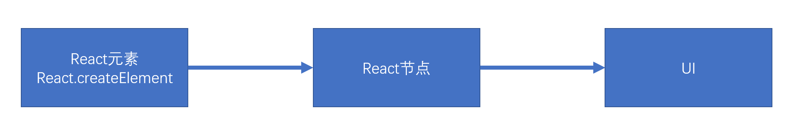
首次渲染(新节点渲染)
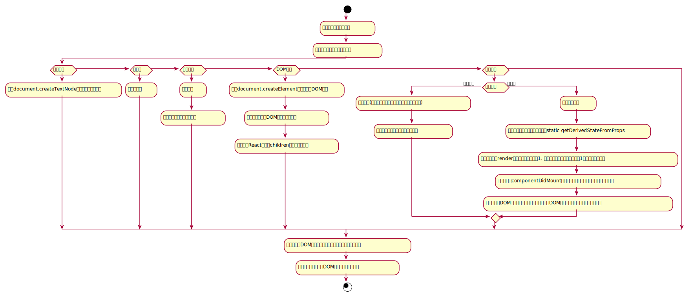
通过参数的值创建节点
根据不同的节点，做不同的事情
文本节点：通过
document.createTextNode创建真实的文本节点空节点：什么都不做
数组节点：遍历数组，将数组每一项递归创建节点（回到第1步进行反复操作，直到遍历结束）
DOM节点：通过
document.createElement创建真实的DOM对象，然后立即设置该真实DOM元素的各种属性，然后遍历对应React元素的children属性，递归操作（回到第1步进行反复操作，直到遍历结束）组件节点
函数组件：调用函数(该函数必须返回一个可以生成节点的内容)，将该函数的返回结果递归生成节点（回到第1步进行反复操作，直到遍历结束）
类组件：
- 建该类的实例
- 立即调用对象的生命周期方法：
static getDerivedStateFromProps - 运行该对象的
render方法，拿到节点对象（将该节点递归操作，回到第1步进行反复操作） - 将该组件的
componentDidMount加入到执行队列（先进先出，先进先执行），当整个虚拟DOM树全部构建完毕，并且将真实的DOM对象加入到容器中后，执行该队列
生成出虚拟DOM树之后，将该树保存起来，以便后续使用
将之前生成的真实的DOM对象，加入到容器中。
xxxxxxxxxx101const app = <div className="assaf">2 <h1>3 标题4 {["abc", null, <p>段落</p>]}5 </h1>6 <p>7 {undefined}8 </p>9</div>;10ReactDOM.render(app, document.getElementById('root'));以上代码生成的虚拟DOM树：
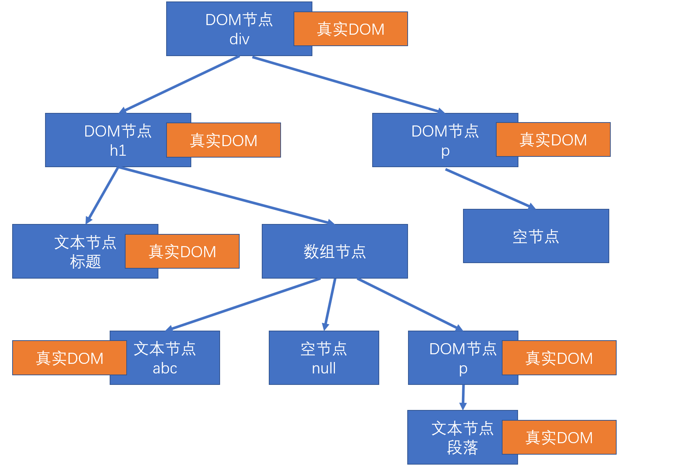
xxxxxxxxxx141function Comp1(props) {2 return <h1>Comp1 {props.n}</h1>3}45function App(props) {6 return (7 <div>8 <Comp1 n={5} />9 </div>10 )11}1213const app = <App />;14ReactDOM.render(app, document.getElementById('root'));以上代码生成的虚拟DOM树：
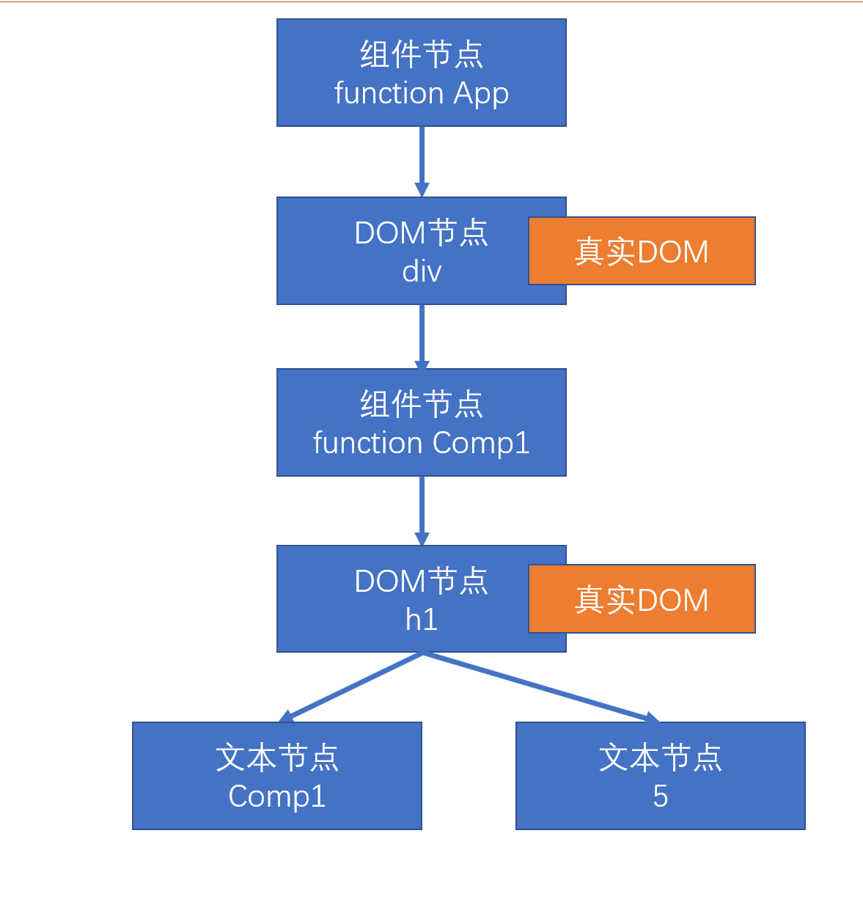
xxxxxxxxxx201class Comp1 extends React.Component {2 render() {3 return (4 <h1>Comp1</h1>5 )6 }7}89class App extends React.Component {10 render() {11 return (12 <div>13 <Comp1 />14 </div>15 )16 }17}1819const app = <App />;20ReactDOM.render(app, document.getElementById('root'));以上代码生成的虚拟DOM树：
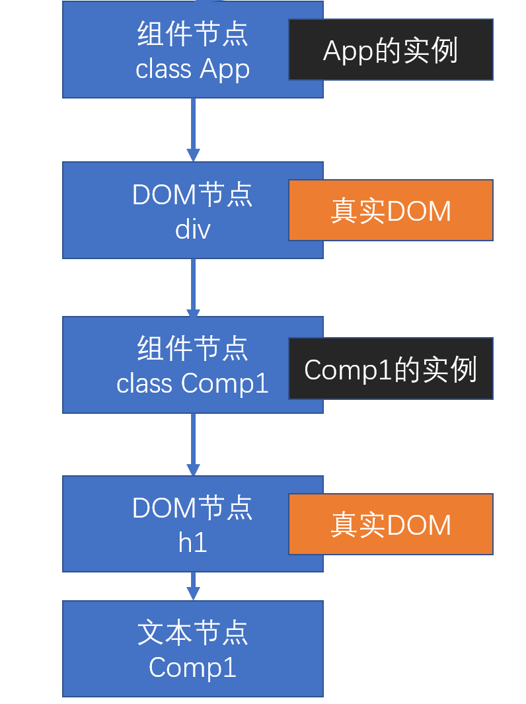
更新节点
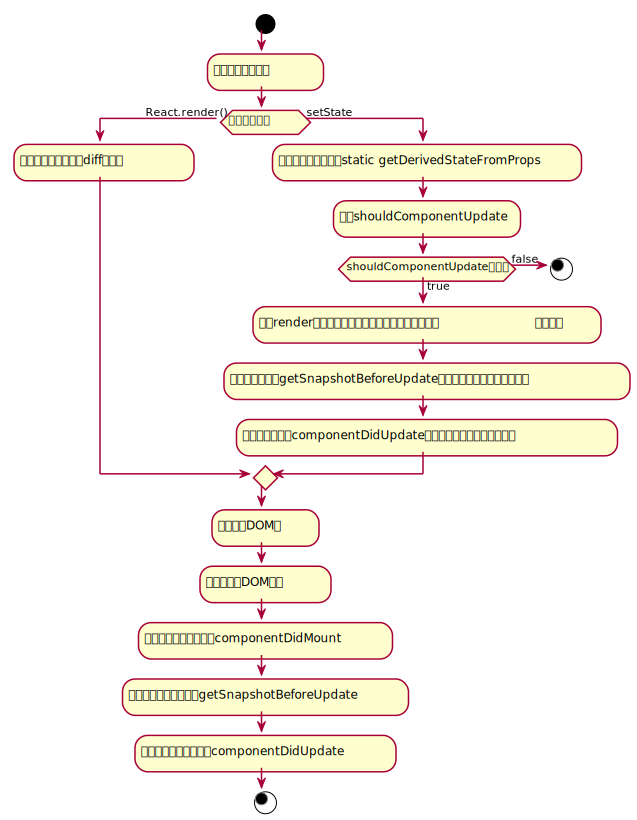
节点更新的场景
- 重新调用
ReactDOM.render，触发根节点更新 - 在类组件的实例对象中调用
setState，会导致该实例所在的节点更新
- 重新调用
节点的更新
如果调用的的是
ReactDOM.render，进行根节点的对比（diff）更新如果调用的是
setState- 运行生命周期函数，
static getDerivedStateFromProps - 运行
shouldComponentUpdate，如果该函数返回false，终止当前流程 - 运行
render，得到一个新的节点，进入该新的节点的对比更新 - 将生命周期函数
getSnapshotBeforeUpdate加入执行队列，以待将来执行 - 将生命周期函数
componentDidUpdate加入执行队列，以待将来执行
- 运行生命周期函数，
后续步骤
- 更新虚拟DOM树
- 完成真实的DOM更新
- 依次调用执行队列中的
componentDidMount - 依次调用执行队列中的
getSnapshotBeforeUpdate - 依次调用执行队列中的
componentDidUpdate
对比更新
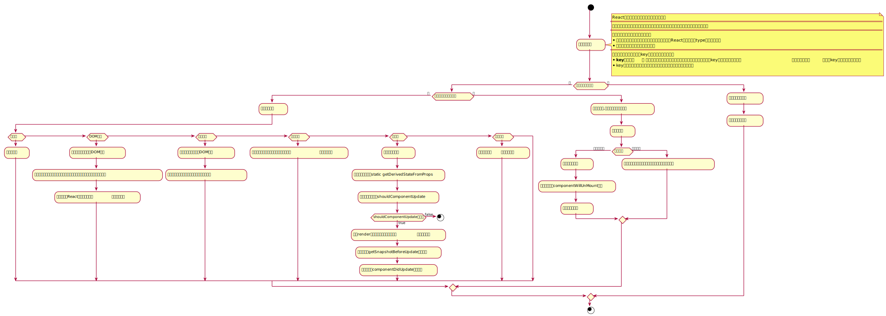
将新产生的节点，对比之前虚拟DOM中的节点，发现差异，完成更新
问题：对比之前DOM树中的哪个节点？（即找对比目标）
React为了提高对比效率，做出以下假设：
假设节点不会出现层次的移动（对比时，直接找到旧树中对应位置的节点进行对比）
不同的节点类型会生成不同的结构
- 相同的节点类型：节点本身类型相同，如果是由React元素生成，type值还必须一致
- 其他的，都属于不相同的节点类型
多个兄弟通过唯一标识（key）来确定对比的新节点
- key值的作用 ： 用于通过旧节点，寻找对应的新节点，如果某个旧节点有key值，则其更新时，会寻找相同层级中的相同key值的节点，进行对比
- key值应该在一个范围内唯一（兄弟节点中），并且应该保持稳定
找到对比目标
判断节点类型是否一致
一致
根据不同的节点类型，做不通的事
空节点：不做任何事情
DOM节点
- 直接重用之前的真实DOM对象
- 将其属性的变化记录下来，以待将来统一完成更新（现在不会真正的变化）
- 遍历该新的React元素的子元素，递归对比更新
文本节点
- 直接重用之前的真实DOM对象
- 将新的文本变化记录下来，将来统一完成更新
函数组件
- 重新调用函数，得到一个节点对象，进入递归对比更新
类组件
- 重用之前的实例
- 调用生命周期方法
static getDerivedStateFromProps - 调用生命周期方法
shouldComponentUpdate，若该方法返回false，终止 - 运行
render，得到新的节点对象，进入递归对比更新 - 将该对象的
getSnapshotBeforeUpdate加入队列 - 将该对象的
componentDidUpdate加入队列
数组节点
- 遍历数组进行递归对比更新
不一致
整体上，卸载旧的节点，全新创建新的节点
创建新节点： 进入新节点的挂载流程
卸载旧节点
文本节点、DOM节点、数组节点、空节点、函数组件节点：直接放弃该节点，如果节点有子节点，递归卸载节点
类组件节点：
- 直接放弃该节点
- 调用该节点的
componentWillUnMount函数 - 递归卸载子节点
没找到对比目标
流程
- 创建新加入的节点
- 卸载多余的旧节点
通常情况下，在以下两种情况下，找不到度对比目标：
- 新的DOM树中有节点被删除
- 新的DOM树中有节点添加
注意事项
在了解React相关的渲染原理后，在书写代码时，有一点注意的是，当控制一个元素的显示与隐藏的时，尽量不要改变元素的结构，这样会造成性能的损耗
xxxxxxxxxx561import React, { Component } from 'react'234export default class App extends Component {5 state = {6 visible: false7 }8 render() {9 // 不推荐做法10 // if (this.state.visible) {11 // return <div>12 // <h1>标题</h1>13 // <button onClick={() => {14 // this.setState({15 // visible: !this.state.visible16 // })17 // }}>显示/隐藏</button>18 // </div>;19 // }20 // return <div>21 // <button onClick={() => {22 // this.setState({23 // visible: !this.state.visible24 // })25 // }}>显示/隐藏</button>26 // </div>;27 // }28 // 29 30 // 推荐做法131 // 利用css控制元素的显示和隐藏32 return (33 <div>34 <h1 style={{display: this.state.visible ? 'block' : 'none'}}>标题</h1>35 <button onClick={() => {36 this.setState({37 visible: !this.state.visible38 })39 }}>显示/隐藏</button>40 </div>41 )42 43 // 推荐做法2：无论显示隐藏，在该位置上都存在一个React元素，以提高对比更新时查找对比元素的效率44 const h1 = this.state.visible? <h1>标题</h1> : null;45 return (46 <div>47 {h1}48 <button onClick={() => {49 this.setState({50 visible: !this.state.visible51 })52 }}>显示/隐藏</button>53 </div>54 )55 }56}工具
严格模式
StrictMode(React.StrictMode)，本质是一个组件，该组件不进行UI渲染（如React.Fragment <>），它的作用是，在渲染内部组件时，发现不合适的代码
识别不安全的生命周期
关于使用过时字符串 ref API 的警告
关于使用废弃的 findDOMNode 方法的警告
检测意外的副作用
React要求，副作用代码仅出现在以下生命周期函数中
ComponentDidMountComponentDidUpdateComponentWillUnMount
副作用： 一个函数中，做了一些会影响函数外部数据的事情，例如：
- 异步处理
- 改变参数值
- setState
- 本地存储
- 改变函数外部的变量
相反的，如果一个函数没有副作用，则可以认为该函数是一个纯函数
在严格模式下，虽然不能监控到具体的副作用代码，但它会将不能具有副作用的函数调用两遍，以便发现问题。（这种情况，仅在开发模式下有效）
检测过时的 context API
Profiler
性能分析工具，分析某一次或多次提交（更新），涉及到的组件的渲染时间
- 火焰图：得到某一次提交，每个组件总的渲染时间以及自身的渲染时间
- 排序图：得到某一次提交，每个组件自身渲染时间的排序
- 组件图：某一个组件，在多次提交中，自身渲染花费的时间
HOOK
HOOK简介
HOOK是React16.8.0之后出现
在React中，组件妇分为：无状态组件（函数组件）、类组件
类组件中中存在的一些麻烦
- this指向问题
- 繁琐的生命周期
- 其他问题
HOOK专门用于增强函数组件的功能（HOOK在类组件中是不能使用的），使之理论上可以成为类组件的替代品
官方强调：没有必要更改已经完成的类组件，官方目前没有计划取消类组件，只是鼓励使用函数组件
HOOK（钩子）本质上是一个函数(命名上总是以use开头)，该函数可以挂载任何功能
HOOK种类：
useStateuseEffect- 其他...
State Hook
state Hool是一个在函数组件中使用的函数（useState），用于在函数组件中使用状态
useState函数函数有一个参数，这个参数的值表示状态的默认值
函数的返回值是一个数组，该数组一定包含来两项
- 当前的状态值
- 改变状态的函数
一个函数组件中可以有多个状态，这种做法非常有利于横向切分关注点
useState实现原理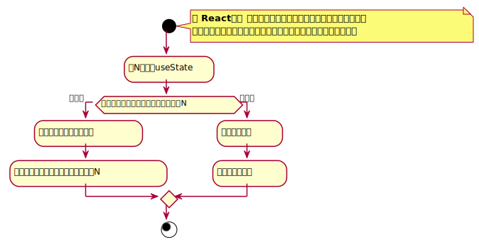
注意细节
useState最好写到函数的起始位置，便于阅读useState严禁出现在代码块（判断、循环）中useState返回的函数（数组的第二项），引用不变（节约内存空间）使用函数改变数据
- 若数据和之前的数据完全相等（使用Object.is比较），不会导致重新渲染，以达到优化效率的目的
- 传入的值不会和原来的数据进行合并，而是直接替换
如果要实现强制刷新组件
类组件：使用
forceUpdate函数- 强制刷新，不会运行
shouldComponentUpdate函数
- 强制刷新，不会运行
函数组件：使用一个空对象的
useState
如果某些状态之间没有必然的联系，应该分化为不同的状态，而不要合并成一个对象
和类组件的状态一样，函数组件中改变状态可能是异步的（在DOM事件中），多个状态变化会合并以提高效率，此时，不能信任之前的状态，而应该使用回调函数的方式改变状态
- 如果状态变化要使用到之前的状态，尽量传递函数
Effect Hook
Effect Hool：用于在函数组件中处理副作用
useEffect函数- 该函数接收一个函数作为参数，接收的函数就是需要进行副作用操作的函数
- 副作用函数的运行时间点，是在页面完成真实的UI渲染之后，因此它的执行是异步的，并且不会阻塞浏览器
注意细节
副作用函数的运行时间点，是在页面完成真实的UI渲染之后，因此它的执行是异步的，并且不会阻塞浏览器
与类组件中
componentDidMount和componentDidUpdate的区别componentDidMount和componentDidUpdate，更改了真实DOM，但是用户还没有看到UI更新，同步的useEffect中的副作用函数，更改了真实DOM，并且用户已经看到了UI更新，异步的
每个函数组件中，可以多次使用
useEffect，但不要放入判断或循环等代码块中useEffect中的副作用函数，可以有返回值，返回值必须是一个函数，该函数叫做清理函数- 该函数运行时间点，在每次运行副作用函数之前
- 首次渲染组件不会运行
- 组件被销毁时一定会运行
useEffect函数，可以传递第二个参数第二个参数是一个数组
数组中记录该副作用的依赖数据
当组件重新渲染后，只有依赖数据与上一次不一样的时，才会执行副作用
所以，当传递了依赖数据之后，如果数据没有发生变化
- 副作用函数仅在第一次渲染后运行
- 清理函数仅在卸载组件后运行
- 使用空数组作为依赖项，则副作用函数仅在挂载时运行一次
副作用函数中，如果使用了函数上下文中的变量，则由于闭包的影响，会导致副作用函数中变量不会实时变化。
副作用函数在每次注册时，会覆盖掉之前的副作用函数，因此，尽量保持副作用函数稳定，否则控制起来会比较复杂。
自定义Hook
自定义Hook：将一些常用的额、跨越多个组件的Hook功能，抽离出去形成一个函数，该函数就是自定义Hook
自定义Hook，由于其内部需要使用Hook功能，所以它本身也需要按照Hook的规定实现
- 函数名必须以use开头
- 调用自定义Hook函数时，应该放到顶层
例如：
- 很多组件需要在第一次加载完成之后，获取所有学生数据
- 很多组件都需要在第一次加载完成后，启动一个计时器，然后在组件销毁时卸载
使用Hook的时候，如果没有严格按照Hook的规则进行，eslint的一个插件（eslint-plugin-react-hooks）会报出警告
Reducer Hook
学完Redux之后学习
Context Hook
用于获取上下文数据
xxxxxxxxxx181import React, {useContext} from 'react';23const ctx = React.createContext();45function Test() {6 const value = useContext(ctx);7 return <h1>Test，上下文的值: { value }</h1>8}910export default function App() {11 return (12 <div>13 <ctx.Provider value="abc">14 <Test/>15 </ctx.Provider>16 </div>17 );18}Callback Hook
函数名：
useCallback，用于得到一个固定引用值的函数，通常用它进行性能优化useCallback该函数有两个参数
- 函数，
useCallback会固定该函数的引用，只要依赖项没有发生变化，则始终返回之前函数的地址 - 数组，记录依赖项
该函数返回：引用相对固定的函数地址
- 函数，
Memo Hook
- 函数名：
useMemo，用于保持一些比较稳定的数据，通常用于性能优化 - 如果React元素本身的引用没有发生变化，一定不会重新渲染
Ref Hook
useRef:一个参数
- 默认值
返回一个固定对象：
{current: 值}[个人理解]：函数组件首次运行会运行该函数，产生一个对象，并由React节点持有该对象的引用，之后重新渲染均不会再运行该函数（即由
useRef产生的对象，在函数组件销毁之前，一直保持原引用）
ImpreativeHandle Hook
对于类组件，可以使用ref得到其组件实例，然后通过实例使用其上面的一些方法，但是函数组件不可以
useImperativeHandle三个参数
- ref值，传入的ref对象
{current:值} - 函数，使用函数的返回值作为current属性的值
- 依赖项
运行
- 如果不给依赖项，则每次运行函数组件都会调用该方法
- 如果使用了依赖项，则第一次调用后，会进行缓存，只有依赖项发生变化才会重新调用
- ref值，传入的ref对象
xxxxxxxxxx61function Test(props, ref) {2 useImperativeHandle(ref, () => {3 // 相当于 ref.current = 14 return 1;5 }, []);6}LayoutEffect Hook

useEffect：浏览器渲染完成之后，用户看到新的渲染效果之后useLayoutEffect：浏览器完成了DOM改动，但没有呈现给用户- 应该尽量使用
useEffect，因为它不会导致渲染阻塞，如果出现了问题，再考虑使用useLayoutEffectHook
DebugValue Hook
useDebugValue：用于将自定义Hook的关联数据显示到调试栏- 如果创建的自定义Hook通用性比较高，可以选择使用useDebugValue方便调试
React动画
- React动画库：
react-transition-group
CSSTransition
进入时，发生：
- 为CSSTransition内部的DOM根元素（后续统一称之为DOM元素）添加样式enter
- 在一下帧(enter样式已经完全应用到了元素)，立即为该元素添加样式enter-active
- 当timeout结束后，去掉之前的样式，添加样式enter-done
退出时，发生：
- 为CSSTransition内部的DOM根元素（后续统一称之为DOM元素）添加样式exit
- 在一下帧(exit样式已经完全应用到了元素)，立即为该元素添加样式exit-active
- 当timeout结束后，去掉之前的样式，添加样式exit-done
设置classNames属性，可以指定类样式的名称
- 字符串： 为类样式添加前缀
- 对象： 为每个类样式指定具体的名称（非前缀）
关于首次渲染时的类样式，appear、apear-active、apear-done，它和enter的唯一区别在于完成时，会同时加入apear-done和enter-done
可以与 Animate.css联用
SwitchTransition
用于有秩序的切换内部组件
默认情况下：out-in
- 当key值改变时，会将之前的DOM根元素添加退出样式（exit,exit-active)
- 退出完成后，将该DOM元素移除
- 重新渲染内部DOM元素
- 为新渲染的DOM根元素添加进入样式(enter, enter-active, enter-done)
in-out
- 重新渲染内部DOM元素，保留之前的元素
- 为新渲染的DOM根元素添加进入样式(enter, enter-active, enter-done)
- 将之前的DOM根元素添加退出样式（exit,exit-active)
- 退出完成后，将该DOM元素移除
该库寻找dom元素的方式，是使用已经过时的API：findDomNode，该方法可以找到某个组件下的DOM根元素
TransitionGroup
该组件的children，接收多个Transition或CSSTransition组件，该组件用于根据这些子组件的key值，控制他们的进入和退出状态
Router
概述
无论是使用Vue，还是React，开发的单页应用程序，可能只是该站点的一部分（某一功能块）
一个单页应用里，可能会划分为多个页面（几乎完全不同的页面效果）（组件）
如果要在单页应用中完成组件的切换，需要实现以下两个功能：
- 根据不同的页面地址，展示不同的组件（核心）
- 完成无刷新的地址切换
把实现了以上两个功能的插件，称之为路由
react-router：路由核心库，包含诸多和路由功能呢相关的核心代码react-router-dom：利用路由核心库，结合实际的页面，实现和页面路由密切相关的功能如果是在页面中实现路由，需要安装
react-router-dom
两种模式
路由：根据不同的页面地址，展示不同的组件
url地址组成：
例：https://www.react.com:443/news/1-2-1.html?a=1&b=2#abcdefg协议名(schema)：
https主机名(host)：
www.react.com- ip地址
- 预设值：
localhost - 域名
- 局域网中电脑名称
端口号(port)：
443- 如果协议是http，端口号是80，则可以省略端口号
- 如果协议是https，端口号是443，则可是省略端口号
路径(path)：
news/1-2-1.html地址参数(search、query)：
a=1&b=2- 附带的数据
- 格式：
属性名=属性值 & 属性名=属性值……
哈希(hash、锚点)
- 附带的数据
Hash Router(哈希路由)
根据url地址中的哈希值来确定显示的组件
使用hash实现路由的原因：hash的变化，不会导致页面的刷新，这种模式的兼容性最好
Browser History Router（浏览器历史记录路由）
HTML5出现后，新增了History API，从此以后，浏览器拥有了改变路径而不刷新页面的方式
History：表示浏览器的历史记录，它使用栈（后进先出）的方式存储API
history.length：获取栈中的数据量history.pushState：向当前历史记录栈中加入一条新记录- 参数1：附加的数据，自定义的数据，可以是任何类型
- 参数2：页面的标题，目前大部分浏览器都不支持
- 参数3：新的地址
history.replaceState：将当前指针指向的历史记录，替换某个记录- 参数1：附加的数据，自定义的数据，可以是任何类型
- 参数2：页面标题，目前大部分浏览器不支持
- 参数3：新的地址
history方式：根据页面的路径决定渲染哪个组件
路由组件
Router组件
它本身不做任何展示，仅是提供路由模式的配置，另外，该组件会产生一个上下文，上下文中会提供一些实用的对象和方法，供其他 相关组件使用
HashRouter：该组件使用hash模式BrowserRouter：该组件使用BrowserHistory模式匹配
通常情况下，Router组件只有一个，将该组件包裹整个页面
Route组件
根据不同的地址，展示不同的组件
组件属性：
path：匹配的路径- 默认情况下，不区分大小写，可以设置
sensitive属性为true，来区分大小写 - 默认情况下，只匹配初始目录，如果要精确匹配，配置
exact属性为true - 如果不写path，则会匹配任意路径
- 默认情况下，不区分大小写，可以设置
component：匹配成功后要显示的组件children- ？？？传递React元素，无论是否匹配，一定会显示children，并且忽略component属性（官网指定children取值应该是一个函数）
- 传递一个函数，该函数有多个参数，这些参数来自于上下文，该函数返回React元素，则一定会显示返回的元素，并且忽略component属性
render：其与childen的区别在于，render是匹配后才会运行，chiidren无论是否匹配都会运行
Route组件可以写到任意的地方，只要保证它是Router组件的后代元素
Switch组件
- 写到Switch组件中的Route组件，当匹配到第一个Route后，会立即停止匹配
- 由于Switch组件会循环所有的子元素，然后让每个子元素会去完成匹配，若匹配到，则渲染对应组件，然后停止循环，因此，不能在Switch的子元素中使用除了Route外的其他组件
路由信息
Router组件会创建一个上下文，并且，向上下文中注入一些信息
该上下文对开发者是隐藏的，Router组件若匹配到了地址，则会将这些上下文信息作为属性传入到对应的组件
history
它并不是window.history对象，我们利用该对象无刷新跳转地址
为什么不直接使用window.history对象？
- React-Router中有两种模式：Hash、History，如果直接使用window.history，只能支持一种模式
- 当使用window.history.pushState方法时，没有办法收到任何通知，将导致React无法知晓地址发生了变化，结果导致无法重新渲染组件
API
push：将某个新的地址入栈（历史记录）
- 参数1：新的地址
- 参数2：可选，附带的状态数据（一般不用，因为该数据依赖跳转，直接输入网址，得不到该数据）
replace：将某个新的地址替换掉当前栈中的地址
go
forward
back
location
- 与
history.location完全一致，是同一个对象，但是，与window.location不同 location对象记录了当前地址的相关信息- 通常使用第三方插件
query-string，用于解析地址栏中的数据
match
该对象中保存了路由匹配的相关信息
isExact：事实上，当前的路径和路由的配置路径是否是精确匹配的params：获取路径规则中对应的数据
实际上，在书写Route组件中的path属性时，可以书写一个
string pattern（字符串正则）xxxxxxxxxx41<Route path="/a/b/c/:year/:month/:day" />2<Route path="/a/b/c/:year?/:month?/:day?" />3<Route path="/a/b/c/:year(\d+)/:month(\d+)/:day(\d+)" />4<Route path="/a/b/c/:year/:month/:day/*" />React-Router使用了第三方库
Path-to-RegExp，该库的作用是，将一个字符串正则转换为一个真正的正则表达式向某个页面传递数据的方式
- 使用state，在push页面时，加入state
- 利用search，把数据填写到地址栏中的
?后 - 利用hash，把数据填写到hash后
- params，把数据填写到路径中
非路由组件获取路由信息
某些组件，并没有直接放到Route中，而是嵌套在其他普通组件中，因此，它的props中没有路由信息，如果这些组件需要获取到路由信息，可以使用下面两种方式：
- 将路由信息从父组件一层一层传递到子组件（不适合嵌套层级太深的组件）
- 使用React-Router提供的高阶组件
withRouter，包装要使用的组件，该高阶组件会返回一个新组件，新组件将向提供的组件注入路径信息
其他组件
已学习组件：
- Router：BrowserRouter、HashRouter
- Route
- Switch
- 高阶函数：withRouter
Link
生成一个无需刷新的a元素
属性：
to
字符串：跳转的目标地址
对象：
- pathname: url路径
- search
- hash
- state：附加的状态信息
replace：bool，表示是否是替换当前地址，默认是false
innerRef：可以将内部的a元素的ref附着在传递的对象的或函数参数上
- 函数
- 对象
NavLink
是一种特殊的Link，Link组件具备的功能它都有
其具备的额外功能是：根据当前地址和链接地址，来决定该链接的样式
属性：
- activeClassName：匹配时使用的类名
- activeStyle：匹配时使用的内联样式
- exact：是否精确匹配
- sensitive：匹配时是否区分大小写
- strict：是否严格匹配最后一个斜杠
Redirect
重定向组件，当加载到该组件时，会自动跳转（无刷新）到另外一个地址
属性
to：跳转的地址
- 字符串
- 对象
push：默认为false，表示跳转使用的替换方式，设置为true后，则使用push的方式跳转
from：当匹配到from地址规则时才进行跳转
exact：是否精确匹配
sensitive：匹配时是否区分大小写
strict：是否严格匹配最后一个斜杠
常见应用
路由嵌套
解决的问题：对于子页面的路径问题，如果固定书写，缺乏灵活性且不易修改
两种方式：
使用match中的url：该方式得到父组件的匹配路径，然后将其与子页面的相应路径进行拼接
写配置文件：将路由组件的层级结构以及路径进行配置，然后通过函数递归拼接
xxxxxxxxxx111const config = {2user: {3root: "/user",4update: "/update",5pay: {6root: "/pay",7beforePay: "/before",8afterPay: "/after"9}10}11};
受保护的页面（组件内守卫）
解决的问题：在路径匹配的情况下，某组件需要在满足某些条件（如：登录权限等）的情况下才显示
解决方式：当路径匹配时，进行相应组件加载时，使用render属性而菲尔component属性
render属性的值为一个函数，该函数在路径匹配时才会运行，在函数中进行条件判断，若满足则返回相应组件，若不满足，则可以进行重定向（并可以在重定向的过程中携带相应路径参数）等操作
- 该函数有一个参数，
{history, location, match} - 该函数需要返回一个可以被渲染的内容
- 该函数有一个参数，
vue路由模式的实现
解决问题：实现vue的静态路由方式
解决方式：
xxxxxxxxxx741// routeConfig.js2import Home from "./components/Home";3import News from "./components/News";4import NewsHome from "./components/NewsHome";5import NewsDetail from "./components/NewsDetail";6import NewsSearch from "./components/NewsSearch";78export default [9 {10 path: "/news",11 name: "news",12 component: News,13 children: [14 {15 path: "/",16 name: "newsHome",17 exact: true,18 component: NewsHome19 },20 {21 path: "/detail",22 name: "newsDetail",23 exact: true,24 component: NewsDetail25 },26 {27 path: "/search",28 name: "newsSearch",29 exact: true,30 component: NewsSearch31 }32 ]33 },34 {35 path: "/",36 name: "home",37 component: Home38 }39];404142// RootRouter.js43import React from "react";44import routeConfig from "./routeConfig";45import { Route, Switch } from "react-router-dom";4647function getRoutes(routes, basePath) {48 if (!Array.isArray(routes)) {49 return null;50 }5152 const rs = routes.map((rt, i) => {53 const { children, path, component: Component, rest } = rt;54 let newPath = basePath + path;55 newPath = newPath.replace(/\/\//g, "/");56 return (57 <Route58 key={i}59 path={newPath}60 {rest}61 render={values => {62 return (63 <Component {values}>{getRoutes(children, newPath)}</Component>64 );65 }}66 ></Route>67 );68 });69 return <Switch>{rs}</Switch>;70}7172export default function RootRouter() {73 return <>{getRoutes(routeConfig, "/")}</>;74}导航守卫
解决的问题：当路径来回切换时，需要进行某些信息的传递和提示时
知识点：
导航守卫：当离开一个页面，进入另一个页面时，触发的事件
history对象：
listen：添加 一个监听器，监听地址的变化，当地址发生变化时，会调用传递的函数
参数为一个函数，函数的运行时间点：发生在即将跳转到新页面时
参数1：location对象， 记录即将跳转到的地址信息
参数2： action，一个字符串，表示进入该地址的方式
POP
- 通过点击浏览器的前进、后退
history.gohistory.goBackhistory.goForward
PUSH
history.push
REPLACE
history.replace
返回结果：函数，可以调用该函数取消监听
xxxxxxxxxx31const unListen = history.listen((location, action) => {2console.log(locaiotn, action);3})block： 设置一个阻塞，并同时设置阻塞消息，当页面发生跳转时，会进入阻塞，并将阻塞消息传递到路由根组件的
- history对象只绑定第一次执行的block，后面的block均不会进行绑定
- block需要配合Router组件的
getUserConffirmation参数进行匹配和，不然始终默认显示阻塞信息
xxxxxxxxxx51const unBlock = history.block('message');2const unBLock = history.block((location, action) ==> {3console.log(location, action);4return "message"5});
getUserConfirmation： 路由根组件 Router属性参数：函数
参数1：阻塞消息
字符串消息
函数
- 参数1：location对象
- 参数2： action
- 返回结果： 一个字符串，用于表示阻塞消息
参数2： 回调函数，调用该函数并传递true，则表示进入到新页面，否则，不做任何操作
切换动画
xxxxxxxxxx281import React from "react";2import { CSSTransition, SwitchTransition } from "react-transition-group";3import { Route } from "react-router-dom";4import "animate.css";56export default function TransitionRoute({ component: Component, rest }) {7 return (8 <Route {rest}>9 {({ match }) => {10 return (11 <CSSTransition12 in={match ? true : false}13 timeout={500}14 classNames={{15 enter: "animated fast fadeInRight",16 exit: "animated fast fadeOutLeft"17 }}18 mountOnEnter={true}19 unmountOnExit={true}20 >21 <Component />22 </CSSTransition>23 );24 }}25 </Route>26 );27}28滚动条问题
解决的问题：地址跳转时，不刷新页面，因此在跳转路径时，滚动条不能恢复到初始位置
解决方式：
- 在每个路由对应的组件中， 使用hook或在
componentDidMount中恢复滚动条位置 - 设置block，在
getUserConfirmation中恢复滚动条位置，因每次执行该函数时，地址均在变换
阻止跳转
解决的问题：在某些页面填写了某些数据时，进行页面跳转时，提示是否要舍弃填写信息等
解决方式：将表单组件变味受控组件，在组件onChange事件中改变状态时，根据e.target.value值是否为undefined，设置和取消block
Redux
核心概念
MVC：它是一个 UI的解决方案，用于降低UI，以及UI关联的数据的复杂度
传统的服务端MVC
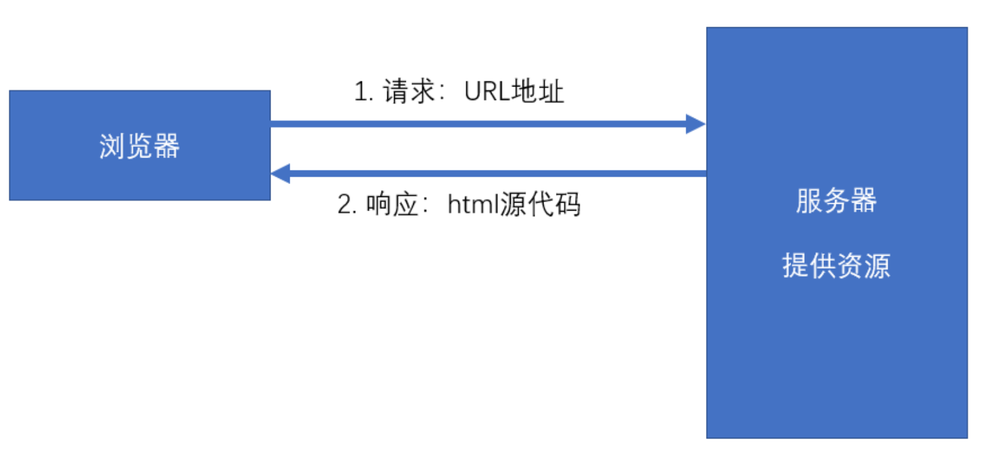
环境：
- 服务端需要响应一个完成的HTML
- 该HTML包含页面需要的数据
- 浏览器仅承担渲染页面的作用
以上这种方式叫做服务端渲染，即服务器端将完整的页面组装好之后，一起发送给客户端。
服务器端渲染，需要处理UI中要用到的数据，并且要将数据嵌入到页面中，最终生成一个完整的HTML页面响应。
为了降低处理这个过程的复杂度，出现了MVC模式
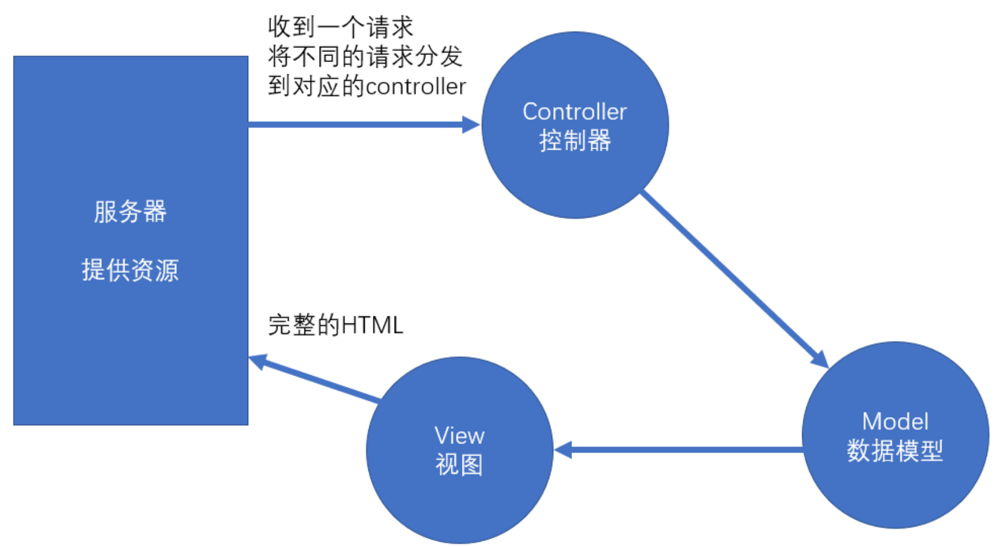
Controller：处理请求，组装这次请求需要的数据
Model：需要用于UI渲染的数据模型
view：视图，用于将模型组装到界面中
前端MVC模式困难
React只解决了model --> view的问题，但其他的问题却难以得到解决：
前端的Controller要比服务器复杂很多，因为前端中的Controller处理的是用户的操作，而用户的操作场景是复杂的
对于组件化的框架（Vue、React），它们使用的是单向数据流。
若需要共享数据，则必须将数据提升到顶层组件，然后数据再一层一层传递，极其繁琐。
虽然可以使用上下文来提供共享数据，但对数据的操作难以监控，使得调试错误以及数据还原变得极其困难。
且，在一个大中型项目的开发中，共享的数据很多，会导致上下文中的数据变的非常复杂。
前端独立数据解决方案
Flux
- Facebook提出的数据解决方案，它的最大历史意义，在于引入了action的概念
- action是一个普通的对象，用于描述要干什么
action是触发数据变化的唯一原因store表示数据仓库，用于存储共享数据，还可以根据不同的action更改仓库中的数据
xxxxxxxxxx121var loginAction = {2type: "login",3payload: {4loginId:"admin",5loginPwd:"123123"6}7}89var deleteAction = {10type: "delete",11payload: 1 // 用户id为112}Redux
- 在Flux的基础上，引入了
reducer的概念 reducer：处理器，用于根据action来处理数据，处理后的数据会被仓库重新保存
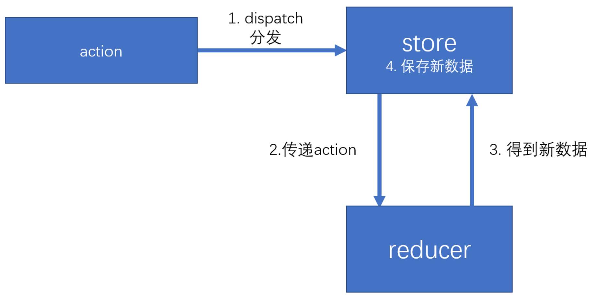
- 在Flux的基础上，引入了
Redux管理数据
xxxxxxxxxx321import { createStore } from "redux";23//假设仓库中仅存放了一个数字，该数字的变化可能是+1或-14//约定action的格式：{type:"操作类型", payload:附加数据}56/**7 * reducer本质上就是一个普通函数8 * @param state 之前仓库中的状态（数据）9 * @param action 描述要作什么的对象10 */11function reducer(state, action) {12 //返回一个新的状态13 if (action.type === "increase") {14 return state + 1;15 }16 else if (action.type === "decrease") {17 return state - 1;18 }19 return state;//如果是一个无效的操作类型，数据不变20}2122window.store = createStore(reducer, 10);2324const action = {25 type: "increase"26}2728console.log(window.store.getState()); //得到仓库中当前的数据2930window.store.dispatch(action); //向仓库分发action3132console.log(window.store.getState()); //得到仓库中当前的数据action
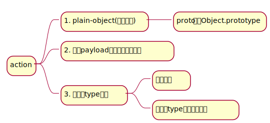
在大型项目中，由于操作类型非常多，为了避免硬编码（hard code），会将action的类型存放到一个或一些单独的文件中（样板代码）
xxxxxxxxxx31export const INCREASE = Symbol('increase');2export const DECREASE = Symbol('decrease');3export const SET = Symbol('set');为了方便传递action，通常会使用action创建函数（action creator）来创建action
action创建函数应为无副作用的纯函数
- 不能以任何形式改动参数
- 不可以有异步
- 不可以对外部环境中的数据造成影响
xxxxxxxxxx161import * as actionTypes from "./action-type"2/**3* 得到一个用于增加数字操作的action4*/5export function getIncreaseAction() {6return {7type: actionTypes.INCREASE8};9}1011export function getSetAction(newNumber) {12return {13type: actionTypes.SET,14payload: newNumber15}16}为了方便利用action创建函数来分发（触发）action，redux提供了一个函数
bindActionCreator，该函数用于增强action创建函数的功能，使它不仅可以创建action，并且创建后会自动完成分发xxxxxxxxxx81import { createStore, bindActionCreators } from "redux";2import * as numberActions from "./action/number-action";34// ……此处省略reducer56const store = createStore(reducer, 10);7const bindActions = bindActionCreators(numberActions, store.dispatch);8bindActions.createIncreaseAction(); // 可以直接调用方法生成action
reducer
Reducer是用于改变是数据的函数
一个数据仓库中，有且仅有一个reducer
通常情况下，一个工程只有一个仓库
因此，一个系统中，只有一个reducer
为了方便管理，通常会将reducer放到单独的文件中
reducer被调用的时机
通过
store.dispatch，分发一个action，此时，会调用reducer当创建一个store的时候，会调用一次reducer
可以利用这一点，用reducer初始化状态
- 创建仓库时，不传递任何默认状态
- 将reducer的参数state设置一个默认值
reducer的内部通常使用switch来判断type值
reducer必须是一个没有副作用的纯函数
为什么需要纯函数？
- 纯函数有利于测试和调试
- 有利于还原数据
- 有利于将来和React结合时优化
具体要求
- 不能改变参数，因此若要让状态变化，必须得到一个新的状态
- 不能有异步
- 不能对外部环境造成影响
由于在大中型项目中，操作比较复杂，数据结构也比较复杂，因此，需要对reducer进行细分
- redux提供了方法，可以方便的合并reducer
combineReducers：合并Reducer，得到一个新的Reducer，新的reducer管理一个对象，该对象中的每一个个属性交给对应的reducer管理
store
store用于保存数据
通过createStore方法创建对象
该对象的成员
dispatch：分发actiongetState：得到仓库中当前的状态replaceReducer：替换当前的Reducersubscribe：注册一个监听器，监听器是一个无参函数- 函数运行时间点：在分发一个action之后，会运行注册的监听器，
- 函数返回值：返回一个函数，用于取消监听
Redux中间件
中间件：类似于插件，可以在不影响原本功能、不改动原本代码的基础上，对其功能进行增强
在Resux中，中间件主要用于增强dispatch函数
实现Redux中间件的基本原理：是更改仓库中的dispatch函数
Redux中间件的书写：
中间件本身是一个函数，该函数接受一个store参数，表示创建的仓库，该仓库并非一个完整的仓库对象，仅包含getState、dispath。
函数运行时间点，是在仓库创建之后运行
- 由于创建仓库后需要自动运行设置的中间件函数，因此，需要在创建仓库时，告诉仓库有哪些中间件
- 需要调用1
applyMiddleware函数，将函数的返回结果作为createStore的第二或第三个参数
中间件函数必须返回一个dispatch创建函数
applyMiddleware函数，用于记录有哪些中间件，它会返回一个函数- 该函数用于记录创建仓库的方法，然后又返回一个函数
xxxxxxxxxx61// applyMiddleware调用方式23// 方式14const store = createStore(reducer, applyMiddleware(logger1, logger2));5// 方式26const store = applyMiddleware(logger1, logger2, ……)(createStore)(reducer);
补充
Redux中间件的本质：是得到一个dispatch，用于覆盖原有仓库中的dispatch，以增强功能
xxxxxxxxxx151// 中间件的标准书写格式2// 函数的最外面一层是为了确保每个中间件可以使用原始的store中的dispatch和getState3// 纠正：源码中，最外层store中的dispatch函数，指向最终生成的dispatch，而非原始store中最初的dispatch4function middleware(store) {5return funciton (nextDispatch) {6return function dispatch(action) {7// …… 真正用于增强功能的dispatch代码8}9}10}1112// 简写形式13const middleware = store => next => action => {14// ……15}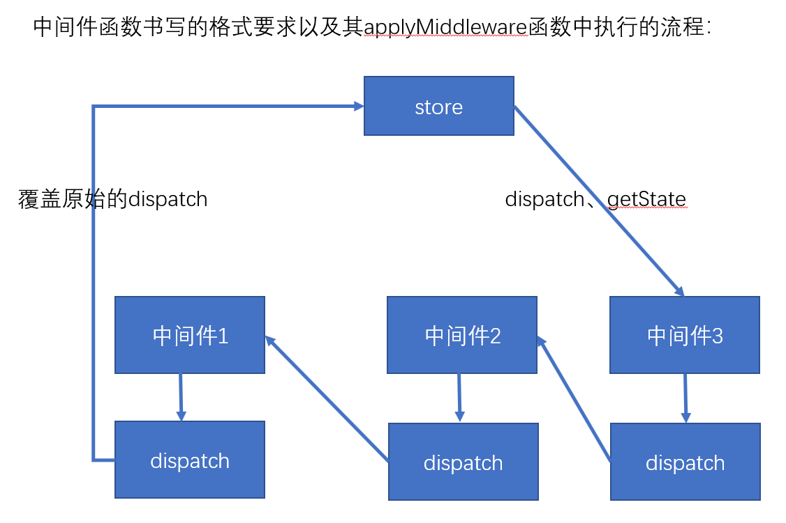
applyMiddleware中，逆序执行中间件函数的原因，是为了将各个中间件函数执行返回的dispatch往前传递，这样，在执行最后得到的store.dispatch时，能保证中间件的执行顺序从前往后执行
xxxxxxxxxx101// 加入中间之后，最后得到的store.dispatch2store.dispatch = (action) => {3// 中间件1开始4mid1-dispatch(action);5// 中间件2开始6mid2-dispatch(action);7// ……8// 中间件2结束9// 中间件1结束10}
Redux中间件
redux-logger
redux日志中间件
xxxxxxxxxx221// 方式12import { applyMiddleware, createStore } from 'redux';3 4// Logger with default options5import logger from 'redux-logger'6const store = createStore(7 reducer,8 applyMiddleware(logger)9)1011// 方式212import { applyMiddleware, createStore } from 'redux';13import { createLogger } from 'redux-logger'14 15const logger = createLogger({16 // ...options17});18 19const store = createStore(20 reducer,21 applyMiddleware(logger)22);redux-thunk
thunk允许action是一个带有副租用的函数，当action是一个函数分支时，thunk会阻止action继续向后移交
thunk会向函数中传递三个参数：
- dispatch：来自于store.dispatch
- getState：来自于store.getState
- extra：来自于用户设置的额外参数
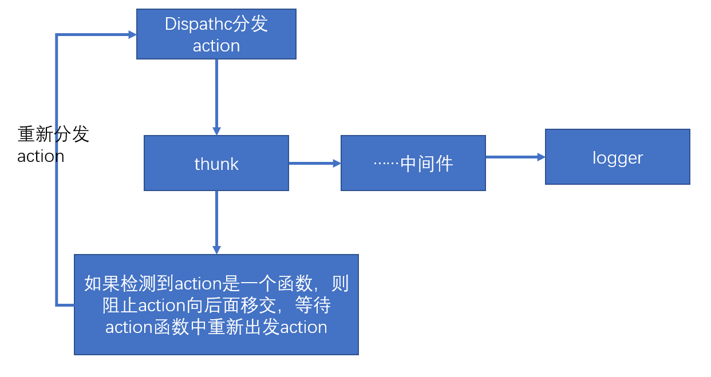
redux-promise
如果action是一个promise，则会等待promise完成，将完成的结果作为action触发；
如果不是一个promise，则判断其payload是否是一个promise，如果是，则等待promise完成，然后将得到的结果作为payload的值触发
迭代器和迭代协议
解决副作用的redux中间件：
redux-thunk：需要改动action，可接收action是一个函数redux-promise：需要改动action，可接收action是一个promise对象，或action的payload是一个promise对象
以上两个中间件，会导致action或者action创建函数不再纯净
reduc-saga：将解决上述问题，它不仅可以保持action、action创建函数、reducer的纯净，而且可以用模块化的方式解决副作用，并且功能非常强大。redux-saga，是建立在ES6基础的生成器基础上的，要熟练的使用saga，必须理解生成器。
要理解生成器，必须先理解迭代器和可迭代协议
迭代
迭代类似于遍历
- 遍历：指有多个数据组成的集合数据结构（map、set、array等其他类数组），需要从该结构中依次取出数据进行某种处理
- 迭代：按照某种逻辑，依次取出下一个数据进行处理
生成器
saga
redux-actions
组件、路由、数据
react-redux
redux和router
dva
dva插件
umijs
antDesign